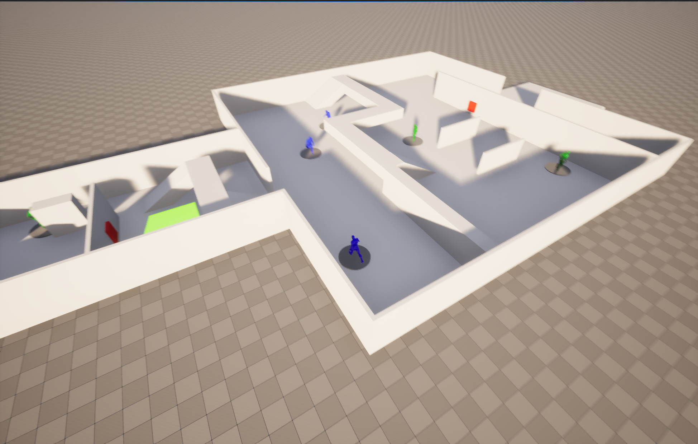
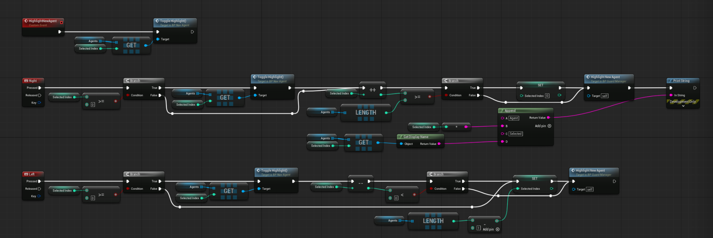
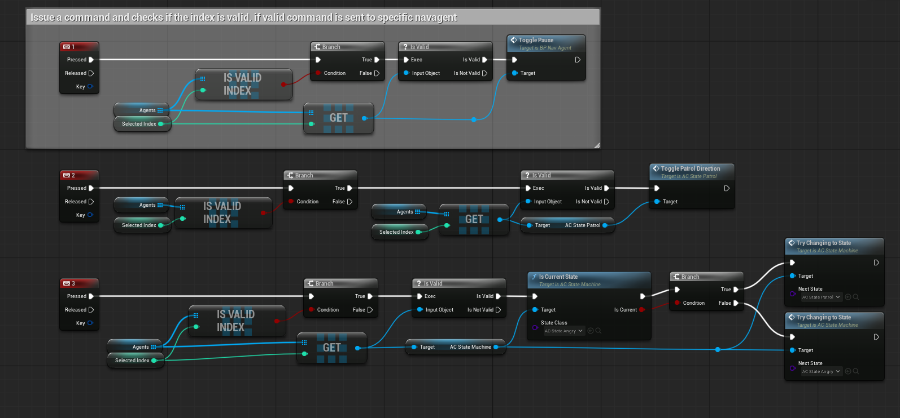
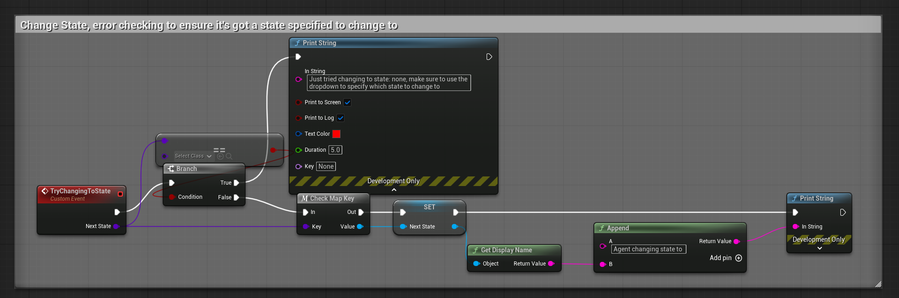
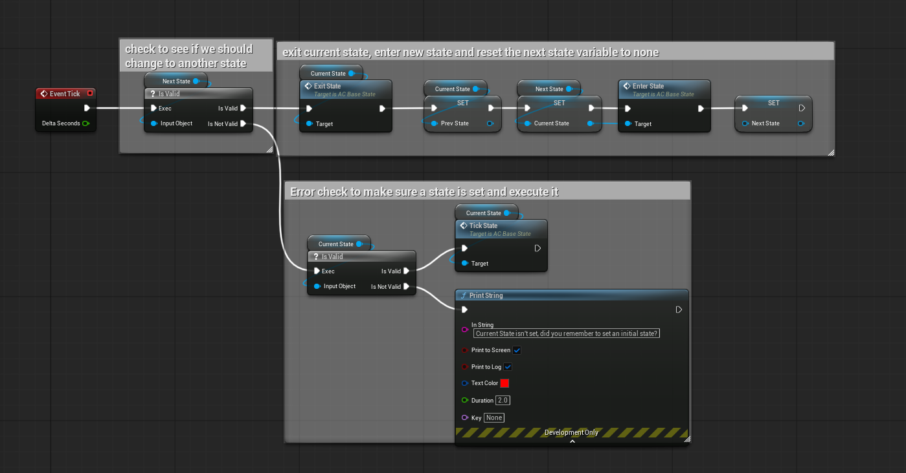
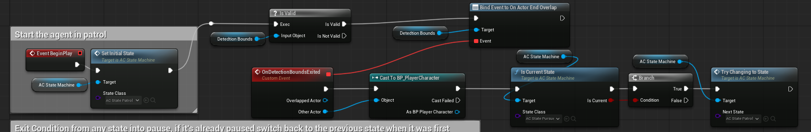

PROJECT OVERVIEW
Sneaky Sneaky is a course-based stealth prototype built on a supplied Unreal Engine state-machine foundation. I extended and integrated the AI behaviors, guard command systems, player interactions, and level progression into a playable experience.
The level introduces its mechanics across smaller rooms before culminating in a larger encounter. The player can reach an exit trigger to complete the prototype, while guards patrol, react to player detection, and respond to individual commands.
Role: Gameplay / Technical Designer • Focus: Blueprint AI, NPC selection and commands, state transitions, debugging, and pursuit behavior.

PLAYABLE PROTOTYPE
GAMEPLAY & AI RESPONSE
The first capture follows the player through the level to the escape objective. As the player passes guards, they react and pursue; the final trigger displays the victory message. The second capture isolates the runtime commands and visual feedback used to inspect individual AI behavior.
SYSTEM 01
CENTRALIZED GUARD MANAGER
The BP_GuardManager uses an editable Agents array and Selected Index to target one guard at a time. Left and Right cycle through the array with wraparound, and the manager updates a visual selection indicator when the selected agent changes.
Commands are dispatched only after checking the array index and selected actor reference. Key 1 toggles pause, key 2 toggles patrol direction, and key 3 requests a change between Angry and Patrol behavior. The manager handles player inputs while each guard's components handle the underlying behavior.


SYSTEM 02
STATE-DRIVEN NPC BEHAVIOR
The project uses a component-based state-machine foundation. A state-change interface routes requests to the machine, which checks the requested state and resolves it through its state-reference map. During its update cycle, a pending transition triggers Exit State, stores the previous state, assigns the new current state, calls Enter State, and clears the pending transition. With no transition pending, the current state receives Tick State.
Development-only messages report missing state requests or missing initial state setup, making behavior changes easier to debug. This lifecycle architecture comes from the starter foundation and was used and extended during the assignment; it is not presented as an entirely original framework.


SYSTEM 03
RUNTIME STATE FEEDBACK
Each guard communicates its current behavior through a color change, allowing the player and developer to recognize state transitions during playtesting.
Green: patrol movement • Dark green: waiting at a navigation point • Gray: paused • Blue: reverse patrol • Red: angry/alarm • Purple: pursuit
When commanded into Angry, the selected guard navigates toward its assigned alarm tile and returns to Patrol after reaching the overlap trigger. Player detection can transition a guard into Pursue.
ENGINEERING CHALLENGE
KEEPING PURSUIT INSIDE EACH ENCOUNTER
The problem
During testing, guards could follow the player into other rooms, disrupting the intended separation between encounters.
My solution
I independently implemented assignable detection-boundary volumes for guards. On initialization, each guard validates its configured boundary and binds to that actor's end-overlap event. When the player leaves the boundary, the handler checks that the exiting actor is the player and that the guard is currently in Pursue, then requests a return to Patrol.
The result
Pursuit ends when the player leaves the guard's assigned encounter area, preserving room-based gameplay progression without replacing the underlying state machine. This is pursuit cancellation based on the player's exit event—not a physical navigation restriction on the guard.

DEVELOPMENT & DEBUGGING
I tested multiple guards running independently, command selection and index wraparound, pause and reverse behaviors, Angry-to-Patrol return behavior, and player-triggered pursuit. The boundary-volume solution came from testing the integrated prototype and noticing that unrestricted pursuit interfered with adjacent rooms.
The project was developed in an earlier map before I transferred the completed level content into the correctly named submission map. The portfolio focuses on the finished playable prototype and its systems.
CONTRIBUTION BREAKDOWN
Course-Provided Foundation
Starter Unreal Engine project, foundational state-machine architecture, and supplied baseline AI/navigation assets. Existing architecture was extended rather than claimed as authored from scratch.
My Work
Integrated and extended guard behaviors and runtime controls, configured multiple independent agents and navigation paths, built the playable room progression, debugged behavior interactions, and independently designed and implemented the configurable room-based pursuit-boundary solution.